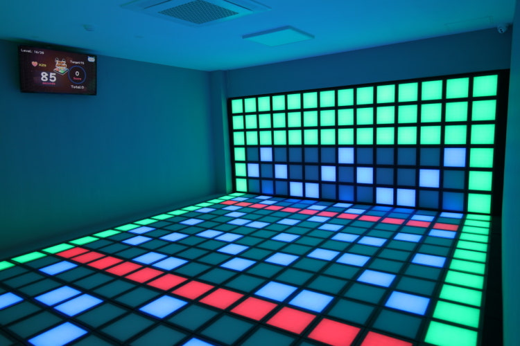

소개
웬만한 놀거리는 다 겪어 봐서 지루하신 분들은 주목! 이런 이색 놀거리는 어떤가요?
처음 경험해 보는 놀거리 : 얼마 전부터 이색 놀거리로 각광받기 시작한 "펌프아케이드"는 '게임은 고정적'이라는 고정관념을 깨는 놀거리입니다. 끊임없이 움직여야 하는 게임은 아마 생전 처음 겪어 보시는 장르일 거예요.
날아가는 스트레스 : 운동이라고 해도 무방할 정도로 격한 움직임이 필요한 펌프아케이드! 정신없이 움직이다 보면 어느샌가 스트레스가 사라져 버렸다는 걸 느끼게 되실 겁니다.
전부 준비된 편의시설 : 끝나고 나서 땀이 나면 찝찝하시다구요? 걱정하실 필요 없어요! 드라이기, 고데기, 빗, 거울까지 모든 게 갖춰져 있습니다.
게임 모드
- 협동 모드 : 빨간색 발판을 피하면서 점수를 얻는 모드입니다. 파란색 발판은 점수 +1, 초록색 발판은 안전지대, 그리고 빨간색 발판은 라이프 -1! 과연 몇 단계까지 갈 수 있을까요?
- 대전 모드 : 친구를 이겨라! 자신의 색에 맞는 발판을 밟으면 점수가 올라가는 모드입니다. 제한 시간 내에 점수를 가장 많이 얻은 사람이 1등!
펌프아케이드 안산점 가는 길
주소: 경기 안산시 단원구 고잔1길 37
자가용 이용 시: 주변에 주차장이 없어서 중앙역 공영주차장을 이용하셔야 해요.
대중교통 이용 시: 중앙역 로데오거리 주변에 있는 만큼, 4호선 중앙역에서 도보로 7분밖에 걸리지 않습니다. 자가용보다는 대중교통이 편하실 거예요.
몸을 움직이는 건 최고의 스트레스 해소 방법이죠! 소중한 사람들과 같이 펌프아케이드에서 값진 추억도 쌓고, 스트레스도 해소해 보는 건 어떨까요?
← 관광지 목록으로 돌아가기